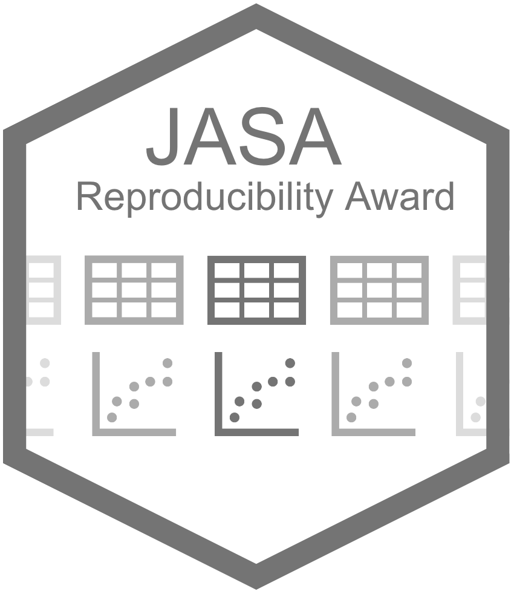

JASA Reproducibility Award
Overview
The JASA Reproducibility Award, established in 2022 by the JASA Editorial board and implemented by the JASA Associate Editors of Reproducibility (AERs), aims to recognize outstanding papers from JASA Applications and Case Studies (ACS) or JASA Theory and Methods (TM) in terms of their computational reproducibility. This award will evaluate the code, data, and the workflow to reproduce the work presented in the paper as part of all invited revisions to Journal of the American Statistical Association (JASA).
Up to three papers are selected every year by the AERs and an award is presented to the authors during the annual Joint Statistical Meetings (JSM) the following year at Computing and Graphics Joint Section Meeting.
Each award comes with a $500 honorarium.
Goals
This award aims to encourage computational reproducibility efforts in the statistical field and to reward outstanding papers that, by implementing rigorous reproducibility processes, increase access to important data, analytic tools, and workflows for the scientific community. Examples of outstanding reproducibility efforts include, but are not limited to:
- Writing reproducible code and analyses
- Building research objects (e.g. workflows, software, benchmarks, computational environments, etc) to help others improve reproducibility of their own code and analyses
- Generating open datasets/software of relevance to the scientific community
- Evaluating the reproducibility of results in the scientific literature
- Developing improved reproducibility processes and guidelines
Process and Criteria
Criteria for eligibility of the award include
- All papers that are accepted into JASA by December 31 are eligible for the award in the following year at JSM.
Process for selection of the award:
- Each AER can nominate at most three papers from the calendar year (e.g. Jan 1 - Dec 31) to be discussed as potential candidates for the award.
- In the spring before JSM, the AERs will meet to discuss all nominated papers from the previous year (e.g. Jan 1 - Dec 31) and establish criteria for comparing the nominated papers. The AERs may remove papers from the candidate pool by consensus at this stage.
- Following the discussion, the AERs will use a standard ranked-choice voting (RCV) system where we will stop at the top three candidates.
Post-selection award process:
- AERs will notify the winners by May before JSM.
- The award would be presented at JSM in July or August.
- Authors of each winning publication will be asked to decide how to split the honorarium.
- Papers from current AERs are not eligible to receive the award.